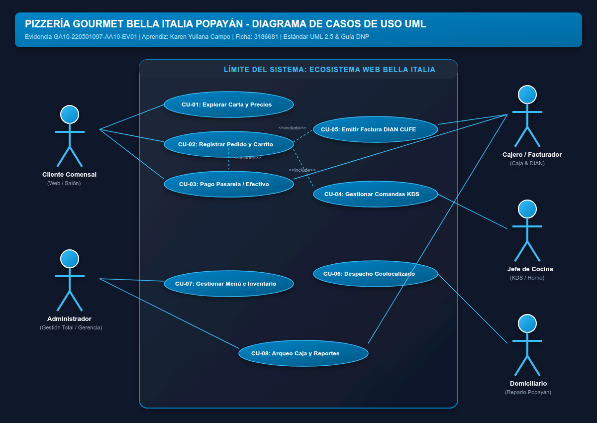
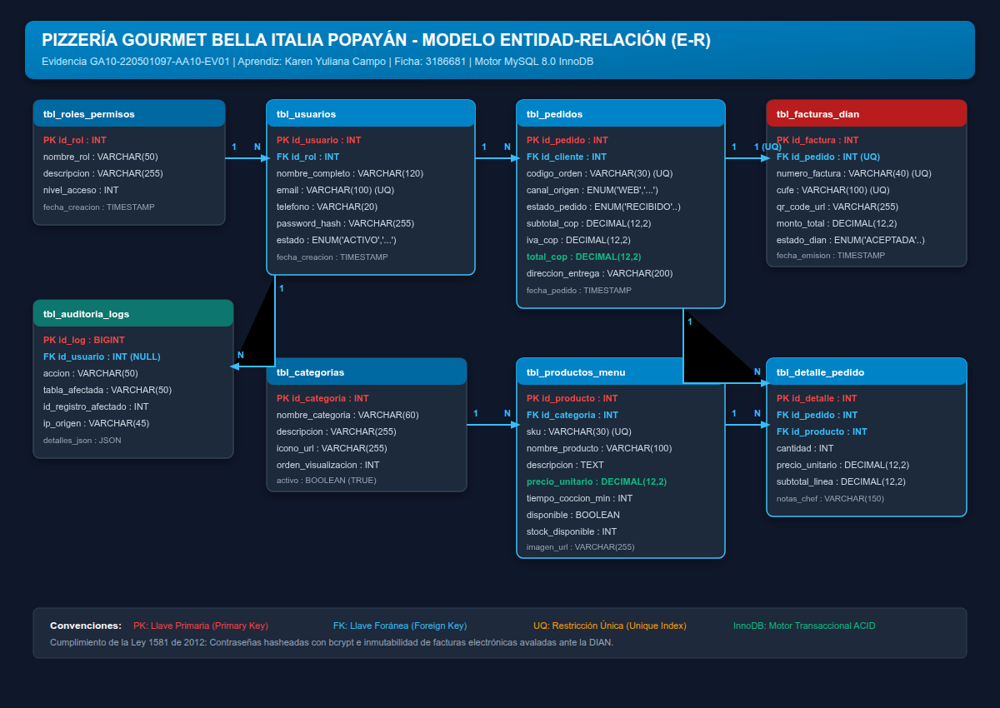
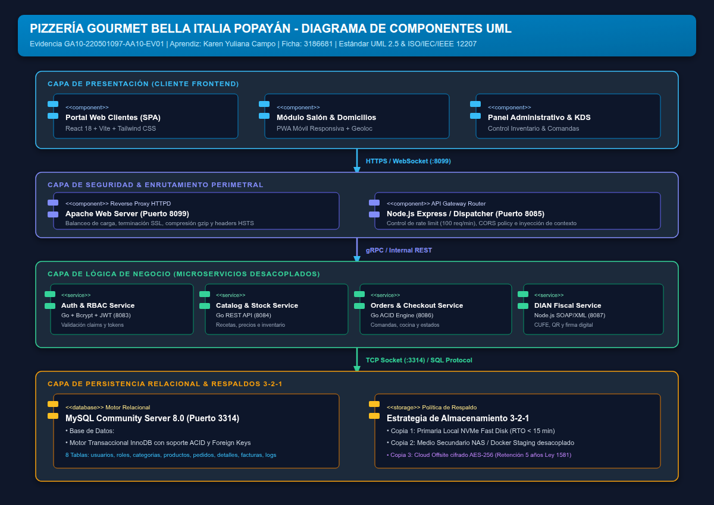

Arquitectura del Sistema
Base de Datos Relacional
Entidades y Tablas
Aislamiento Operativo
1. Prerrequisitos de Instalación del Sistema
Guía DNP & ISO/IEC 12207Para garantizar la correcta ejecución, estabilidad transaccional y seguridad del ecosistema informático de la Pizzería Gourmet Bella Italia Popayán, la infraestructura tecnológica debe satisfacer los siguientes requerimientos mínimos y recomendados:
A. Requisitos de Hardware
| Recurso de Hardware | Requisito Mínimo | Requisito Recomendado (Producción) |
|---|---|---|
| Procesador (CPU) | 2 Cores x86_64 / ARM64 (2.0 GHz) | 4 Cores x86_64 / Intel Xeon o AMD Epyc |
| Memoria RAM | 4 GB DDR4 | 8 GB a 16 GB DDR4/DDR5 con ECC |
| Almacenamiento | 20 GB SSD SATA III | 50 GB NVMe PCIe 4.0 en RAID 1 |
| Conectividad de Red | 100 Mbps Ethernet / Wi-Fi | 1 Gbps Full-Duplex con IP fija pública |
B. Requisitos de Software y Motores
| Componente Software | Versión Mínima | Propósito Operativo |
|---|---|---|
| Sistema Operativo | Linux Ubuntu 22.04 LTS / Debian 12 / Rocky 9 | Servidor host anfitrión de producción |
| Motor de Contenedores | Docker Engine v24.0+ & Compose v2.20+ | Aislamiento total y Zero Host Pollution |
| Motor Base de Datos | MySQL Community Server 8.0.35+ | Motor InnoDB para transacciones ACID |
| Navegadores Soportados | Google Chrome 115+, Firefox 115+, Edge | Compatibilidad HTML5/CSS3/ES6+ |
C. Matriz de Puertos de Red y Variables de Entorno (.env)
El software utiliza la siguiente configuración estandarizada de puertos de red y credenciales parametrizadas:
# Archivo de Configuración de Entorno (.env.production) PUERTO_WEB_HTTP=8099 PUERTO_MYSQL_DB=3314 MYSQL_DATABASE=pizzeria_manual_tecnico_db MYSQL_USER=pizzeria_user MYSQL_PASSWORD=Pizzeria2026*Pass! JWT_SECRET_KEY=sena_ctpi_pizzeria_super_secret_jwt_key_2026! CORS_ALLOWED_ORIGINS=http://localhost:8099,https://pizzeriabellaitalia.com
2. Frameworks y Estándares de Construcción
Guía DNP & Estándares InternacionalesEn cumplimiento con la Guía para la elaboración de manual técnico y de operaciones de los sistemas de información del Departamento Nacional de Planeación (DNP), el software fue estructurado siguiendo rigurosos estándares de la industria:
Frontend & UI
- React 18: Biblioteca reactiva para vistas SPA dinámicas.
- Vite: Empacador y bundler de alta velocidad HMR.
- Tailwind CSS: Framework utilitario para diseño responsivo.
- HTML5 / CSS3: Semántica estándar W3C.
Backend & Lógica
- Go (Golang): Lenguaje compilado para microservicios de alto desempeño.
- Node.js Express: Gateway de enrutamiento y microservicio Auth.
- JWT (RFC 7519): Autenticación sin estado basada en claims de rol.
- Bcrypt: Hashing criptográfico irreversible de credenciales.
Persistencia & DevOps
- MySQL 8.0: Motor relacional con soporte nativo JSON.
- Docker Compose: Orquestación declarativa multicontenedor.
- Apache HTTPD: Servidor web perimetral con compresión gzip.
- Git / GitHub: Control de versiones distribuido.
Estándares Internacionales Aplicados
| Código del Estándar | Denominación Oficial | Aplicación Concreta en Pizzería Bella Italia |
|---|---|---|
| IEEE 830 / ISO 29148 | Especificación de Requisitos de Software (SRS) | Definición formal de historias de usuario y casos de uso del restaurante. |
| ISO/IEC/IEEE 12207:2017 | Ciclo de Vida del Software - Procesos de Ingeniería | Fase de implantación, documentación técnica, pruebas de humo y entrega. |
| ISO/IEC 25010:2023 | Modelo de Calidad del Producto de Software (SQuaRE) | Evaluación de adecuación funcional, eficiencia de desempeño, seguridad y usabilidad. |
| Ley 1581 de 2012 | Régimen General de Protección de Datos Personales (Colombia) | Cifrado de datos personales, hashes irreversibles y política de retención legal. |
3. Diagrama de Casos de Uso del Sistema (UML)
Modelado UML 2.5El modelo de casos de uso refleja la interacción de los cinco actores principales con los módulos funcionales del software:

Actores del Sistema
- Cliente Comensal: Consulta la carta web, personaliza pizzas, realiza pedidos en línea y efectúa pagos.
- Administrador: Gestiona carta de productos, recetas, precios, inventarios y reportes de facturación.
- Cajero / Facturador: Recibe pedidos en salón, liquida pagos presenciales y emite facturas electrónicas DIAN.
- Jefe de Cocina: Monitorea la pantalla de comandas digitales (KDS), cronometra horneado y cambia estados.
- Domiciliario: Consulta ruta geolocalizada en Popayán y confirma entrega al comensal.
Casos de Uso Primarios
CU-01: Explorar Menú y Precios en Tiempo RealCU-02: Agregar ítems al Carrito y CheckoutCU-03: Procesar Comanda Digital en Pantalla de CocinaCU-04: Generar Factura Electrónica con CUFE y QR DIANCU-05: Asignar y Monitorear Domicilio GeolocalizadoCU-06: Arqueo Diario de Caja y Exportación de Ventas
4. Modelo Entidad-Relación y Diccionario de Datos
Esquema Relacional MySQL 8.0A continuación se presenta el modelo Entidad-Relación formalizado para la base de datos relacional de la pizzería:

Diccionario de Datos Interactivo
Escriba en el buscador para filtrar campos, tipos de datos o descripciones técnicas de las tablas relacionales:
| Tabla | Nombre Campo | Tipo Dato | Longitud | Nulo | Clave | Descripción Funcional y Restricción |
|---|
5. Diagrama de Componentes del Sistema (UML)
Arquitectura Modular DesacopladaEstructura de subsistemas, contratos de interfaces RESTful, capas de persistencia y protocolos de interconexión:

Catálogo de Componentes de Software
| ID | Nombre del Componente | Tecnología Principal | Puerto | Responsabilidad Arquitectónica |
|---|---|---|---|---|
| COMP-UI-01 | Frontend Web & Móvil SPA | React 18 / Vite / Tailwind | 8099 (HTTP) | Renderizado de catálogo, carrito, despacho y panel administrativo. |
| COMP-GW-02 | API Gateway & Router | Node.js Express / Proxy | 8085 / 8090 | Enrutamiento de peticiones, validación CORS y balanceo. |
| COMP-AUTH-03 | Microservicio de Autenticación | Go (Golang) / Bcrypt | 8083 | Emisión de tokens JWT con claims de roles y sesiones activas. |
| COMP-ORD-05 | Microservicio de Pedidos y DIAN | Go (Golang) / Transaccional | 8086 | Procesamiento ACID de comandas, facturación electrónica y CUFE. |
| COMP-DB-06 | Motor de Base de Datos Relacional | MySQL 8.0 (InnoDB) | 3314 | Persistencia de 8 tablas relacionales con soporte de rollback. |
6. Scripts y Procedimientos de Instalación Paso a Paso
Despliegue AutomatizadoGuía técnica para que administradores de sistemas y desarrolladores aprovisionen la plataforma desde cero:
Paso 1: Clonación del Repositorio e Instalación de Prerrequisitos
# 1. Clonar el repositorio oficial de la evidencia git clone https://github.com/kyulianacampogutierrez-ux/Evidencias.git cd Evidencias/PET-050_GA10-220501097-AA10-EV01_Manual_Tecnico_Software # 2. Ejecutar validación de prerrequisitos de hardware y software chmod +x scripts_instalacion_despliegue/*.sh ./scripts_instalacion_despliegue/instalar_prerrequisitos_sistema.sh
Paso 2: Despliegue con Docker Compose (Zero Host Pollution)
# 3. Levantar los contenedores de producción Staging en puertos 8099 y 3314 cd docker_manual_tecnico docker compose up -d # 4. Verificar estado saludable de los servicios docker compose ps
Paso 3: Ejecución de Healthchecks Automatizados
# 5. Probar conectividad con Apache y base de datos MySQL cd .. ./scripts_instalacion_despliegue/verificar_estado_componentes_healthcheck.sh
El servidor web queda disponible en http://localhost:8099/ y la base de datos MySQL 8.0 en el socket localhost:3314 con todas las tablas y seeds inicializados correctamente.